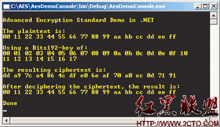
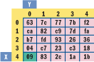
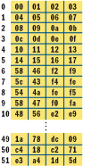
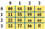
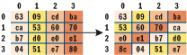

Encrypt It
Keep Your Data Secure with the New Advanced Encryption Standard
Introduction
The National Institute of Standards and Technology (NIST) established the new Advanced Encryption Standard (AES) specification on May 26, 2002. In this article I will provide a working implementation of AES written in C#, and a complete explanation of exactly what AES is and how the code works. I’ll show you how to encrypt data using AES and extend the code given here to develop a commercial-quality AES class. I’ll also explain how and why to incorporate AES encryption into your software systems, and how to test AES-based software.
Note that the code presented in this article and any other implementation based on this article is subject to applicable Federal cryptographic module export controls (see Commercial Encryption Export Controls for the exact regulations).
AES is a new cryptographic algorithm that can be used to protect electronic data. Specifically, AES is an iterative, symmetric-key block cipher that can use keys of 128, 192, and 256 bits, and encrypts and decrypts data in blocks of 128 bits (16 bytes). Unlike public-key ciphers, which use a pair of keys, symmetric-key ciphers use the same key to encrypt and decrypt data. Encrypted data returned by block ciphers have the same number of bits that the input data had. Iterative ciphers use a loop structure that repeatedly performs permutations and substitutions of the input data. Figure 1 shows AES in action encrypting and then decrypting a 16-byte block of data using a 192-bit key.

Figure 1 Some Data
AES is the successor to the older Data Encryption Standard (DES). DES was approved as a Federal standard in 1977 and remained viable until 1998 when a combination of advances in hardware, software, and cryptanalysis theory allowed a DES-encrypted message to be decrypted in 56 hours. Since that time numerous other successful attacks on DES-encrypted data have been made and DES is now considered past its useful lifetime.
In late 1999, the Rijndael (pronounced “rain doll”) algorithm, created by researchers Joan Daemen and Vincent Rijmen, was selected by the NIST as the proposal that best met the design criteria of security, implementation efficiency, versatility, and simplicity. Although the terms AES and Rijndael are sometimes used interchangeably, they are distinct. AES is widely expected to become the de facto standard for encrypting all forms of electronic data including data used in commercial applications such as banking and financial transactions, telecommunications, and private and Federal information.
Overview of the AES Algorithm
The AES algorithm is based on permutations and substitutions. Permutations are rearrangements of data, and substitutions replace one unit of data with another. AES performs permutations and substitutions using several different techniques. To illustrate these techniques, let’s walk through a concrete example of AES encryption using the data shown in Figure 1.
The following is the 128-bit value that you will encrypt with the indexes array:
00 11 22 33 44 55 66 77 88 99 aa bb cc dd ee ff
0 1 2 3 4 5 6 7 8 9 10 11 12 13 14 15
The 192-bit key value is:
00 01 02 03 04 05 06 07 08 09 0a 0b 0c 0d 0e 0f 10 11 12 13 14 15 16 17
0 1 2 3 4 5 6 7 8 9 10 11 12 13 14 15 16 17 18 19 20 21 22 23

Figure 2 Sbox
Figure 2 SboxWhen the AES constructor is called, two tables that will be used by the encryption method are initialized. The first table is a substitution box named Sbox. It is a 16 × 16 matrix. The first five rows and columns of Sbox are shown in Figure 2. Behind the scenes, the encryption routine takes the key array and uses it to generate a “key schedule” table named w[], shown in Figure 3.

Figure 3 Key Sched.
Figure 3 Key Sched.The first Nk (6) rows of w[] are seeded with the original key value (0x00 through 0x17) and the remaining rows are generated from the seed key. The variable Nk represents the size of the seed key in 32-bit words. You’ll see exactly how w[] is generated later when I examine the AES implementation. The point is that there are now many keys to use instead of just one. These new keys are called the round keys to distinguish them from the original seed key.

Figure 4 State
Figure 4 StateThe AES encryption routine begins by copying the 16-byte input array into a 4×4 byte matrix named State (see Figure 4). The AES encryption algorithm is named Cipher and operates on State[] and can be described in pseudocode (see Figure 5).
1 | Cipher(byte[] input, byte[] output) |
Figure 5 Cipher Algorithm Pseudocode
The encryption algorithm performs a preliminary processing step that’s called AddRoundKey in the specification. AddRoundKey performs a byte-by-byte XOR operation on the State matrix using the first four rows of the key schedule, and XORs input State[r,c] with round keys table w[c,r].
For example, if the first row of the State matrix holds the bytes { 00, 44, 88, cc }, and the first column of the key schedule is { 00, 04, 08, 0c }, then the new value of State[0,2] is the result of XORing State[0,2] (0x88) with w[2,0] (0x08), or 0x80:
1 0 0 0 1 0 0 0
0 0 0 0 1 0 0 0 XOR
1 0 0 0 0 0 0 0
The main loop of the AES encryption algorithm performs four different operations on the State matrix, called SubBytes, ShiftRows, MixColumns, and AddRoundKey in the specification. The AddRoundKey operation is the same as the preliminary AddRoundKey except that each time AddRoundKey is called, the next four rows of the key schedule are used. The SubBytes routine is a substitution operation that takes each byte in the State matrix and substitutes a new byte determined by the Sbox table. For example, if the value of State[0,1] is 0x40 and you want to find its substitute, you take the value at State[0,1] (0x40) and let x equal the left digit (4) and y equal the right digit (0). Then you use x and y as indexes into the Sbox table to find the substitution value, as shown in Figure 2.
ShiftRows is a permutation operation that rotates bytes in the State matrix to the left. Figure 6 shows how ShiftRows works on State[]. Row 0 of State is rotated 0 positions to the left, row 1 is rotated 1 position left, row 2 is rotated 2 positions left, and row 3 is rotated 3 positions left.

Figure 6 Running ShiftRows on State
Figure 6 Running ShiftRows on StateThe MixColumns operation is a substitution operation that is the trickiest part of the AES algorithm to understand. It replaces each byte with the result of mathematical field additions and multiplications of values in the byte’s column. I will explain the details of special field addition and multiplication in the next section.
Suppose the value at State[0,1] is 0x09, and the other values in column 1 are 0x60, 0xe1, and 0x04; then the new value for State[0,1] is shown in the following:
1 | State[0,1] = (State[0,1] * 0x01) + |
The addition and multiplication are special mathematical field operations, not the usual addition and multiplication on integers.
The four operations SubBytes, ShiftRows, MixColumns, and AddRoundKey are called inside a loop that executes Nr times—the number of rounds for a given key size, less 1. The number of rounds that the encryption algorithm uses is either 10, 12, or 14 and depends on whether the seed key size is 128, 192, or 256 bits. In this example, because Nr equals 12, the four operations are called 11 times. After this iteration completes, the encryption algorithm finishes by calling SubBytes, ShiftRows, and AddRoundKey before copying the State matrix to the output parameter.
In summary, there are four operations that are at the heart of the AES encryption algorithm. AddRoundKey substitutes groups of 4 bytes using round keys generated from the seed key value. SubBytes substitutes individual bytes using a substitution table. ShiftRows permutes groups of 4 bytes by rotating 4-byte rows. MixColumns substitutes bytes using a combination of both field addition and multiplication.
Field Addition and Multiplication in GF(28)
As you’ve seen, the AES encryption algorithm uses fairly straightforward techniques for substitution and permutation, except for the MixColumns routine. The MixColumns routine uses special addition and multiplication. The addition and multiplication used by AES are based on mathematical field theory. In particular, AES is based on a field called GF(28).
The GF(28) field consists of a set of 256 values from 0x00 to 0xff, plus addition and multiplication, hence the (28). GF stands for Galois Field, named after the mathematician who founded field theory. One of the characteristics of GF(28) is that the result of an addition or multiplication operation must be in the set {0x00 … 0xff}. Although the theory of fields is rather deep, the net result for GF(28) addition is simple: GF(28) addition is just the XOR operation.
Multiplication in GF(28) is trickier, however. As you’ll see later in the C# implementation, the AES encryption and decryption routines need to know how to multiply by only the seven constants 0x01, 0x02, 0x03, 0x09, 0x0b, 0x0d, and 0x0e. So instead of explaining GF(28) multiplication theory in general, I will explain it just for these seven specific cases.
Multiplication by 0x01 in GF(28) is special; it corresponds to multiplication by 1 in normal arithmetic and works the same way—any value times 0x01 equals itself.
Now let’s look at multiplication by 0x02. As in the case of addition, the theory is deep, but the net result is fairly simple. If the value being multiplied is less than 0x80, then the result of multiplication is just the value left-shifted 1 bit position. If the value being multiplied is greater than or equal to 0x80, then the result of multiplication is the value left-shifted 1 bit position XORed with the value 0x1b. This prevents “field overflow” and keeps the product of the multiplication in range.
Once you’ve established addition and multiplication by 0x02 in GF(28), you can use them to define multiplication by any constant. To multiply by 0x03 in GF(28), you can decompose 0x03 as powers of 2 and additions. To multiply an arbitrary byte b by 0x03, observe that 0x03 = 0x02 + 0x01. Thus:
1 | b * 0x03 = b * (0x02 + 0x01) |
This can be done because you know how to multiply by 0x02 and 0x01 and how to perform addition. Similarly, to multiply an arbitrary byte b by 0x0d, you do this:1
2
3b * 0x0d = b * (0x08 + 0x04 + 0x01)
= (b * 0x08) + (b * 0x04) + (b * 0x01)
= (b * 0x02 * 0x02 * 0x02) + (b * 0x02 * 0x02) + (b * 0x01)
The other multiplications needed for the AES MixColumns routine in the encryption and decryption algorithm follow the same general pattern, as shown here:
1 | b * 0x09 = b * (0x08 + 0x01) |
To summarize, addition in GF(28) is the XOR operation. Multiplication in GF(28) reduces to additions and multiplications by 0x02, where multiplication by 0x02 is a conditional 1-bit left shift. The AES specification contains a lot of additional information about operations in GF(28).
Key Expansion
The AES encryption and decryption algorithms use a key schedule generated from the seed key array of bytes. The AES specification refers to this as the KeyExpansion routine. Generating, in essence, multiple keys from an initial key instead of using a single key greatly increases the diffusion of bits. Although not overwhelmingly difficult, understanding KeyExpansion is one of the trickier parts of the AES algorithm. In high-level pseudocode, the KeyExpansion routine looks like the following:
1 | KeyExpansion(byte[] key, byte[][4] w) |
The “use two of the previous rows to create a new row” routine makes use of two subroutines, RotWord and SubWord, and a table of constants named Rcon (for “round constants”). Let’s look at each of these three items and then come back to the KeyExpansion routine as a whole.
The RotWord routine is simple. It accepts an array of 4 bytes and rotates them 1 position left. Because the round schedule table w[] has four columns, RotWord rotates a row of w[] to the left. Notice that the RotWord function used by KeyExpansion is very similar to the ShiftRows routine used by the encryption algorithm except that it works on a single row of the key schedule w[] instead of the entire encryption state table State[].
The SubWord routine performs a byte-by-byte substitution on a given row of the key schedule table w[] using the substitution table Sbox. The substitutions in KeyExpansion operate exactly like those in the encryption algorithm. The input byte to be substituted is separated into an (x,y) pair which are used as indexes into the substitution table Sbox. For example, substitution for 0x27 results in x = 2 and y = 7, and Sbox[2,7] returns 0xcc.
The KeyExpansion routine uses an array Rcon[], called the round constant table. These constants are 4 bytes each to match with a row of the key schedule table. The AES KeyExpansion routine requires 11 round constants. You can see these constants listed in Figure 7.
1 | private void BuildRcon() |
Figure 7 Initializing Rcon (Close Figure 7)
The leftmost byte of each round constant is a power of 2 in the GF(28) field. Another way of looking at it is to observe that each value is the previous value times 0x02, as described in the previous section discussing multiplication in GF(28). Notice that 0x80 × 0x02 = 0x1b is 0x80 left-shifted 1 bit followed by an XOR with 0x1b, as described earlier.
Now let’s take a closer look at the loop inside KeyExpansion. In more detailed pseudocode than before, the loop is:
1 | for (row = Nk; row < (4 * Nr+1); ++row) |
Ignoring the if clause for a moment, you’ll see that each row of the key schedule table w[] is the result of XORing the previous row with the row Nk (4, 6, or 8 depending on the key size) rows before. The first part of the if conditional modifies every fourth, sixth, or eighth row of the key schedule with SubWord, RotWord, and XORing with a round constant, depending on whether the key size is 128, 192, or 256 bits. The second part of the conditional will modify rows 12, 20, 28 and so on—every eighth row—for a 256-bit key to add additional variability to the key schedule.
Let’s see how KeyExpansion gets started with the example presented at the beginning of this article. The seed key is the 192-bit / 6-word value:
1 | 00 01 02 03 04 05 06 07 08 09 0a 0b 0c 0d 0e 0f 10 11 12 13 14 15 16 17 |
The key schedule byte table w[] has the dimensions 4 columns and Nb × (Nr + 1) equals 4 × (12 + 1), or 52 rows. The KeyExpansion routine copies the values in the seed key into the first rows of the key schedule byte table w[]. Because my seed key is 192 bits (24 bytes), and the w[] table always has 4 columns, in this case KeyExapansion copies the seed key into the first 6 rows of w[]. Now let’s see how the KeyExpansion routine fills the rest of the key schedule table. In my example, the first calculated row is row 6 because rows 0 to 5 were filled with the seed key values:
1 | temp = w[row-1] = 14 15 16 17 |
To summarize, an important part of AES encryption and decryption is the generation of multiple round keys from the initial seed key. This KeyExpansion algorithm generates a key schedule and uses substitution and permutation in a way that is similar in most respects to the encryption and decryption algorithms.
The AES Class Constructor in C
Now that I’ve examined all the components of the AES encryption algorithm, I’ll implement it in C#. The official specification of the AES algorithm is contained in Federal Information Processing Standards Publication 197. I decided to base my implementation on it as closely as possible, but I quickly discovered that the specification was more of a theory document than an implementation guide. To exploit the official specification as a resource, I have used the same variable names as those used in the standards publication (even when they are rather cryptic like “Nr” and “w”).
My design uses the nine data members and one enumeration type as shown here:
1 | public enum KeySize { Bits128, Bits192, |
Because the key size can only be 128, 192, or 256 bits, it is a great candidate for an enumerated type:
1 | public enum KeySize { Bits128, Bits192, Bits256 }; |
The specification document generally uses bytes as its basic storage unit but uses 4-byte words as the size for two important data members. The two members Nb and Nk represent the block size in words and key size in words, respectively. Nr represents the number of rounds. The block size is always 16 bytes (or 128 bits, which is 4 words for AES), so it could have been declared as a constant. The key size is assigned a value of 4, 6, or 8 according to the value of the enumeration parameter KeySize. The AES algorithm iterates through a number of rounds to increase the complexity of the encrypted data. The number of rounds is either 10, 12, or 14 and is based on cryptanalysis theory. It depends directly on the key size.
When designing a class interface, I like to work backwards. I imagine calling the constructor and methods from an application. Using this approach, I decided that I wanted to instantiate an AES object like the following:
1 | Aes a = new Aes(the key size, the seed key) |
I called the encryption and decryption routines as follows:1
2a.Cipher(plainText, cipherText);
a.InvCipher(cipherText, decipheredText);
I chose the slightly awkward method names Cipher and InvCipher because they are used in the AES specification document. Here is the code for the AES class constructor:
1 | public Aes(KeySize keySize, byte[] keyBytes) |
The constructor first set the values of Nb, Nk, and Nr by calling a helper method SetNbNkNr, which is shown in Figure 8. If efficiency is a concern, you could put this code directly in the constructor to avoid the overhead of a method call.
1 | private void SetNbNkNr(KeySize keySize) |
Figure 8 SetNbNkNr Method (Close Figure 8)
Next, you have to copy the bytes that are passed into the constructor into the class field variable. The key is declared with the other class fields and it gets its value by doing this:
1 | this.key = new byte[this.Nk * 4]; |
I decided to call the initialization of the substitution tables Sbox[] and iSbox[] using the private helper methods BuildSbox and BuildInvSbox in the constructor. Now Sbox[] and iSbox[] are required by the key expansion routine and the Cipher and InvCipher methods, respectively, so I could have put initialization of Sbox[] and invocation of the KeyExpansion method in both the Cipher and the InvCipher methods, but putting them in the constructor results in a cleaner code structure. sBox[] gets populated in Figure 9. The code that populates iSbox[] is similar. The code is structured for readability. As you’ll see later, there is a surprising alternative to this way of supplying values for the Sbox and iSbox tables.
1 | private void BuildSbox() |
Figure 9 Sbox Initialization (Close Figure 9)
Declaring the key schedule table w[], the round constants table Rcon[] and the state matrix State[] in the constructor, and assigning values to Rcon[] and w[] with private helper methods seems to me to be the best way to organize them, but that is mostly a matter of style. The code that populates the round constant table Rcon is shown in Figure 7.
Recall that the left byte of each row of Rcon[] is a power of 2 in GF(28) so this table could be built computationally using something like the following:
1 | newVal = prevVal * 0x02; |
The AES constructor finishes by building the key schedule table w[] which is done in the KeyExpansion method (see Figure 10). The code is fairly straightforward. The specification document uses a hypothetical 4-byte word data type. Since C# has no such type, it is simulated with an array of 4 bytes. After the key schedule w[] is allocated space using the operator new, the first Nk (4, 6, or 8) rows of w[] get values from the seed key[] array that was passed into the constructor:
1 | this.w[row,0] = this.key[4*row]; |
1 | private void KeyExpansion() |
Figure 10 KeyExpansion Method (Close Figure 10)
The operation of XORing 2 bytes together happens a lot in this code. It requires some casting from byte to int and back to byte because the XOR operator ^ is not defined on the C# byte type. For example
1 | temp[0] = (byte)( (int)temp[0] ^ (int)this.Rcon[row/Nk,0] ); |
The KeyExpansion method conditionally calls the private methods SubWord and RotWord to maintain naming consistency with the specification. Again, because there is no word type in C#, I implemented one using an array of 4 bytes. The code for SubWord and RotWord is fairly simple and you should be able to understand it easily by examining it in the AesLib source code that accompanies this article.
The slightly tricky part is looking up the substitution values in SubWord. Recall that to find the substitute value, you separate the input byte into its leftmost 4 bits and its rightmost 4 bits. For a given byte, right-shifting 4 bits with the >> operator will yield the x index, and logical ANDing with 0000 1111 will yield the y value. In slightly longer, but more readable form than the actual code, I could have done something like the following
1 | int x = word[0] >> 4; |
To summarize, the AES constructor accepts a key size of 128, 192, or 256 bits and a byte array seed key value. The constructor assigns values for the input block size, the seed key size, and the number of rounds for the encryption algorithm and copies the seed key to a data member named key. The constructor also builds four tables: two substitution tables used by the encryption and decryption methods, a table of round constants, and a key schedule of round keys.
The AES Cipher Method in C
The code for the Cipher method is shown in Figure 11. It is really very simple because it mostly farms out the work to the private methods AddRoundKey, SubBytes, ShiftRows, and MixColumns.
1 | public void Cipher(byte[] input, byte[] output) |
Figure 11 The Cipher Method (Close Figure 11)
The Cipher method starts by copying the plaintext input array to the state matrix State[]. After an initial call to AddRoundKey, the Cipher method iterates one time fewer than the total number of rounds. On the last round, the call to MixColumns is omitted as described in the specification.
The code for the AddRoundKey and SubBytes private methods is shown in Figure 12. The AddRoundKey method needs to know what round it is at so that it can reference the correct four rows of the key schedule array w[]. Notice that State[r,c] is XORed with w[c,r] and not w[r,c]. The SubBytes method extracts indexes from the input byte using the same right-shift-4-bits and mask-with-0x0f technique used in the KeyExpansion method.
1 | private void AddRoundKey(int round) |
Figure 12 AddRoundKey and SubBytes Methods (Close Figure 12)
The code for the ShiftRows method is shown in Figure 13. Recall that ShiftRows (which might have been better named RotateRows) rotates row[0] 0 positions to the left, row[1] 1 position to the left, and so forth.
1 | private void ShiftRows() |
Figure 13 ShiftRows Method (Close Figure 13)
After copying State[] into a temp[] matrix, the shifts are then performed with:
1 | this.State[r, (c + r) % Nb ] = temp[r,c]; |
The MixColumns method (see Figure 14) takes every byte and substitutes it with a linear combination of all the other values in the byte’s column using GF(28) addition and multiplication. The constant coefficients used for multiplication are based on field theory and are either 0x01, 0x02, or 0x03. The substitution for a given column c is:1
2
3
4
5
6
7
8State[0,c] = 0x02 * State[0,c] + 0x03 * State[1,c] + 0x01 * State[2,c] +
0x01 * State[3,c]
State[1,c] = 0x01 * State[0,c] + 0x02 * State[1,c] + 0x03 * State[2,c] +
0x01 * State[3,c]
State[2,c] = 0x01 * State[0,c] + 0x01 * State[1,c] + 0x02 * State[2,c] +
0x03 * State[3,c]
State[3,c] = 0x03 * State[0,c] + 0x01 * State[1,c] + 0x01 * State[2,c] +
0x02 * State[3,c]
1 | private void MixColumns() |
Figure 14 MixColumns Method (Close Figure 14)
These expressions are a bit long already so I decided to write private helper functions that return the product of GF(28) multiplication by 0x01, 0x02, and 0x03. The helper functions are very short. For example, the code that’s used to field-multiply a byte b by 0x03 is as follows:1
return (byte) ( (int)gfmultby02(b) ^ (int)b );
As I discussed earlier, multiplication by 0x02 is the essential operation for all GF(28) multiplication. I called my gfmultby02 method, bending my convention of using the same method names that have been used in the specification; the specification calls this routine xtime.
The Cipher method iteratively applies four operations on its input to produce encrypted output. AddRoundKey substitutes bytes using multiple round keys derived from the single original seed key. SubBytes substitutes bytes using values in a substitution table. ShiftRows permutes bytes by shifting rows of bytes, and MixColumns substitutes bytes using field addition and multiplication of values in a column.
The AES InvCipher Method in C
The basic premise behind the AES decipher algorithm is simple: to decrypt an encrypted block, just undo every operation in the reverse order. Although this is the basic concept, there are a few details to handle.
The AES specification names the decipher routine InvCipher rather than alternatives Decipher or Decrypt. This is a reflection of the mathematics behind AES, which are based in terms of inverse mathematical operations.
If you compare this code with the Cipher code, you will see that it is pretty much what you might expect, but with two exceptions. First, the order of the inverse method calls (like InvSubBytes) in the InvCipher method is not exactly the reverse of the corresponding calls (like SubBytes) in the Cipher method, and second, InvCipher calls the AddRoundKey method instead of an InvAddRoundKey method. Notice that the InvCipher algorithm uses the key schedule table but starts at the higher-numbered indexes and works its way down to row 0.
The code for the InvSubBytes, InvShiftRows, and InvMixColumns methods closely mirrors the code for the related SubBytes, ShiftRows, and MixColumns methods. The InvSubBytes method is just like the SubBytes method except that it uses the inverse substitution table iSbox[] instead of the Sbox[] table.
As you might guess, iSbox[] just undoes any mapping performed by Sbox[]. For example, if you have byte b that equals 0x20 and find its substitution value in Sbox[], you get 0xb7. If you look up the substitution value for 0xb7 in iSbox[], you get 0x20.
Similarly the InvShiftRows method undoes the ShiftRows method—row[0] is shifted 0 positions to the right, row[1] is shifted 1 position right, row[2] is shifted 2 positions right, and row[3] is shifted 3 positions right.
The InvMixColumns method undoes the work of MixColumns, but not in an obvious way. Recall that MixColumns replaces each byte in the state matrix with a linear combination of bytes in the original byte’s column and that the coefficients were 0x01, 0x02, and 0x03. Once again, field theory comes into play. It turns out that the inverse operation is similar but uses multiplication by 0x09, 0x0b, 0x0d, and 0x0e like this:
1 | State[0,c] = 0x0e * State[0,c] + 0x0b * State[1,c] + 0x0d * State[2,c] + |
As with the MixColumns method, I decided to write dedicated helper functions rather than expand the already long expressions inline or write a general multiplication helper function. Let me show you how I wrote the function that multiplies any byte, b, by the constant 0x0e (14 in base 10). The number 14, like any number, can be expressed as the sum of powers of 2. In this case, 14 equals 2 + 4 + 8. And since 4 equals 2 squared and 8 equals 2 cubed, you can express 14 as 2 + 22 + 23. Remember that addition is just XOR (^) in GF(28) and since I already have the gfmultby02 function, I can use it to get my result:
1 | return (byte)( (int)gfmultby02(gfmultby02(gfmultby02(b))) ^ /* 23 + */ |
All of the operations used by the AES encryption algorithm are invertible, so the decryption algorithm essentially reverses all the operations performed by encryption.
Using the AES Class
One of the features of AES as implemented in C# is its simplicity. Consider the code in Figure 15 that I used to generate the output shown in Figure 1. After declaring hardcoded values for the 16-byte plaintext input and the 24-byte (192-bit) seed key, an AES object is initialized, the encrypting Cipher method encrypts the plaintext to cipher text, and then the cipher text is decrypted back using InvCipher. Very clean and simple.
1 | static void Main(string[] args) |
Figure 15 Using AES (Close Figure 15)
1 | static void DisplayAsBytes(byte[] bytes) |
Because an AES object works on byte arrays, you can easily adapt it to work on other .NET data types. I constructed a little Windows®-based demo app that accepts a single 8-character (16-byte) string and then encrypts and decrypts it. A sample run is shown in Figure 16.
Figure 16 Encryption Demo
Because both the encryption and decryption routines need to know what key size the user has specified, I declared it as a class-scope variable, like this:
private Aes.KeySize keysize;
Notice that the seed key is not specified by the user. The demo uses a “null key” which consists of all zero bytes by supplying a dummy new byte[16] to the constructor. The size of the dummy argument is irrelevant because the seed key will also be initialized to all zeros. Null key encryption and decryption is an easy and effective way to deter casual external examination of your data. The Encoding.Unicode.GetBytes and Encoding.Unicode.GetString methods in System.Text make it very easy to convert a .NET string to a byte array, and vice versa.
Implementation Alternatives
Now let’s look at some important variations of the AES implementation presented in this article, possible extensions of the code presented here, and cryptanalysis attacks against AES.
As much as any code that I’ve ever worked on, the AES algorithm has significant alternative approaches to implementation. Why is this important? AES is intended to be applicable to a wide range of systems, from smart cards with tiny memory capacities to large multiprocessor mainframe systems. In many scenarios, performance is critical and sometimes memory or processing resources are limited. Virtually every routine in AES can be modified to optimize performance at the expense of memory, or vice versa. For example, assigning the 256 values to the substitution table Sbox[] seems straightforward enough. However, these values are based on GF(28) theory and it turns out that these values can be generated programmatically. The same is true for the inverse substitution table and the round constants table.
Another interesting possibility for alternate implementation is the GF(28) multiplication used by the Cipher and InvCipher methods. My implementation codes a basic function that multiplies by 0x02 and then six additional functions which call gfmultby02. Another possibility would be to write a general multiplication function and use it instead of implementing seven separate functions like I did. At another extreme you could use a complete table of the product of all 256 possible byte values multiplied by 0x01, 0x02, 0x03, 0x09, 0x0b, 0x0d, and 0x0e. Yet another way to approach GF(28) multiplication is to implement it as a lookup into two 256-byte arrays, usually called alog[] and log[] because they are based on certain logarithm-like properties of GF(28).
Although the AES class presented here is fully capable of encrypting any form of .NET data, you might want to consider extending it in a number of ways. First, because the emphasis of this article is on presenting a clear explanation of AES, all error checking was stripped away. In my experience, adding a reasonable amount of error checking to a class similar to this AES class would triple the size of the source code. Because AES uses so many arrays, there is a lot of index bounds checking that should be done. For example, the constructor presented does not even check the size of the seed key parameter.
You might also consider extending this AES class by adding more features. The most obvious place to start would be to add methods that encrypt and decrypt fundamental .NET data types such as System.String and System.Int32. A more ambitious extension would be to implement an encrypted stream class.
How secure is AES? This is a hard question to answer, but the general consensus is that it is the most secure encryption algorithm available. AES has been subjected to more scrutiny than any other encryption algorithm to date. On both a theoretical and practical basis, AES is considered “secure” in the sense that the only effective way to crack it is through a brute-force generation of all possible keys. With a key size of 256 bits, no known brute-force attack can break AES in a reasonable amount of time (it would take years even on the fastest systems available).
Note that the most likely successful attack on an AES cipher results from a weak implementation that allows what is called a timing attack. The attacker uses different keys and precisely measures the time the encryption routine requires. If the encryption routine is carelessly coded so that execution time depends on the key value, it is possible to deduce information about the key. In AES, this is most likely to occur in the MixColumns routine because of field multiplication. Two safeguards against this attack are to insert dummy instructions so that all multiplications require the same number of instructions, or to implement field multiplication as a lookup table, as I’ve described.
There are many possible implementations of AES, especially using lookup tables rather than computation. The basic AES class presented in this article can be used to encrypt and decrypt any form of .NET data or can be extended into a class with added functionality.
Conclusion
The new AES will certainly become the de facto standard for encrypting all forms of electronic information, replacing DES. AES-encrypted data is unbreakable in the sense that no known cryptanalysis attack can decrypt the AES cipher text without using a brute-force search through all possible 256-bit keys.
The major obstacle I found when implementing an AES class in the Microsoft® .NET Framework was that the official specification document was written from a mathematician’s point of view rather than from a software developer’s point of view. In particular, the specification assumes that the reader is fairly familiar with the GF(28) field and it leaves out a few key facts regarding GF(28) multiplication that are necessary to correctly implement AES. I’ve tried here to remove the mystery from AES, especially surrounding GF(28) field multiplication.
It is only a question of time before AES encryption becomes widely available from Microsoft and third-party vendors in the form of .NET Framework libraries. However, having this code in your skill set will remain valuable for a number of reasons. This implementation is particularly simple and will have low resource overhead. In addition, access to and an understanding of the source code will enable you to customize the AES class and use any implementation of it more effectively.
Security is no longer an afterthought in anyone’s software design and development process. AES is an important advance and using and understanding it will greatly increase the reliability and safety of your software systems.
For related articles see:
Security: Protect Private Data with the Cryptography Namespaces of the .NET Framework
Exploring Kerberos, the Protocol for Distributed Security in Windows 2000
For background information see:
The Design of Rijndael: AES - The Advanced Encryption Standard by Joan Daemen and Vincent Rijmen. (Springer-Verlag, 2002)
Announcing the Advanced Encryption Standard (AES): Federal Information Processing Standards Pub 197